Schaubilder der Labyrinth-Seiten
Wände dünn grau, Route rot (dick: Schriftweg, blass: Verbindungsweg, gestrichelt: Sprung).
Zeichen
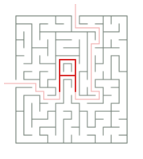
A
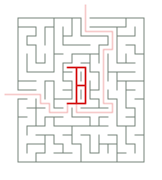
B
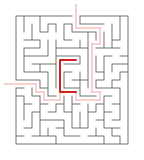
C
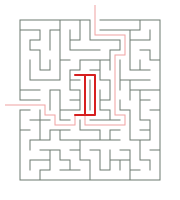
D
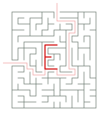
E
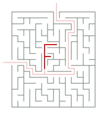
F
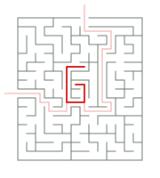
G
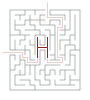
H
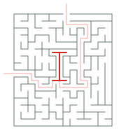
I
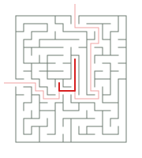
J
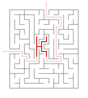
K
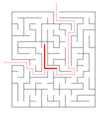
L
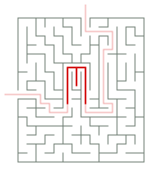
M
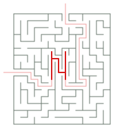
N
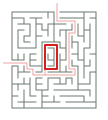
O
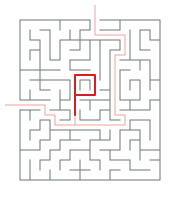
P
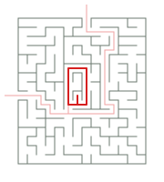
Q
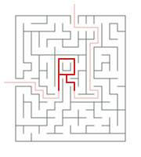
R
 S
S
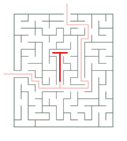
T
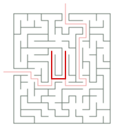
U
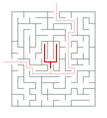
V
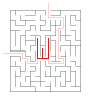
W
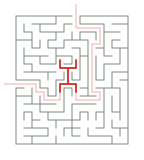
X
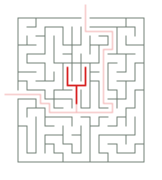
Y
 Z
Z
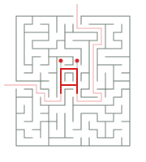
Ä
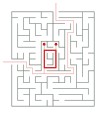
Ö
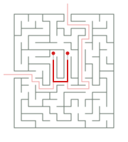
Ü
 0
0
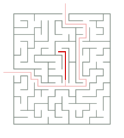
1
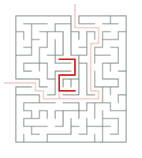
2
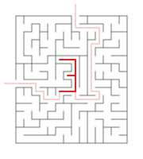
3
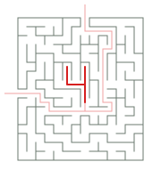
4
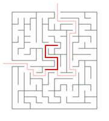
5
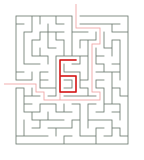
6
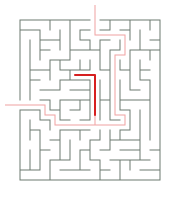
7
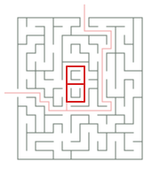
8
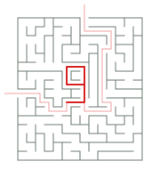
9
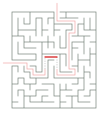
-
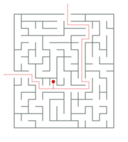
.
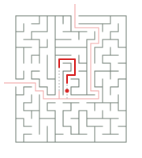
?
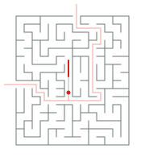
!
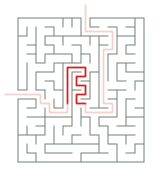
█
Sätze
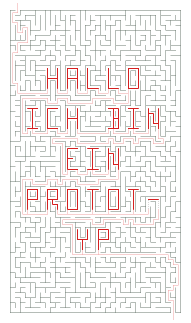
Hallo, ich bin ein Prototyp (Seite 1)
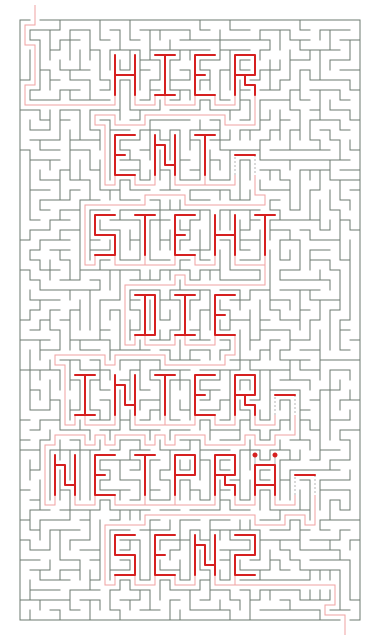
Hier entsteht die Internetpräsenz von Christian Hörauf (Seite 1)
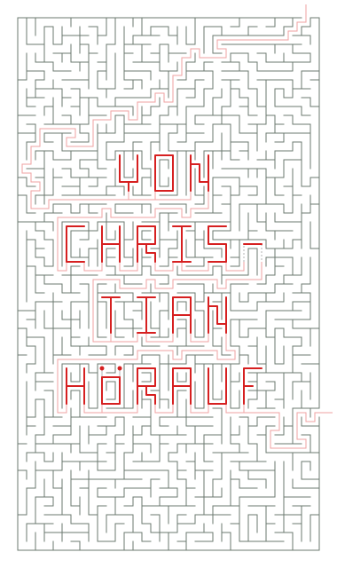
Hier entsteht die Internetpräsenz von Christian Hörauf (Seite 2)
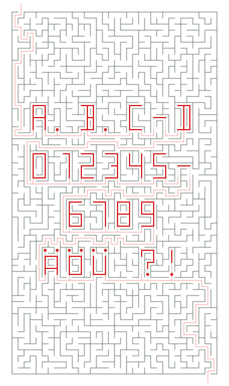
A.B.C-D 0123456789 ÄÖÜ ?! (Seite 1)
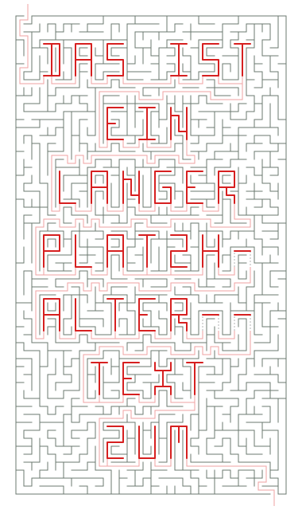
Das ist ein langer Platzhalter-Text zum Ausprobieren mehrerer Seiten (Seite 1)
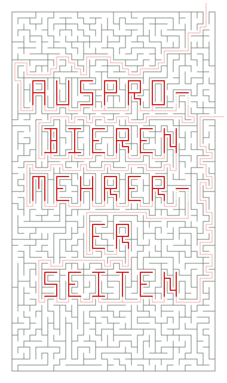
Das ist ein langer Platzhalter-Text zum Ausprobieren mehrerer Seiten (Seite 2)